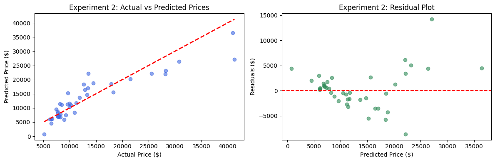
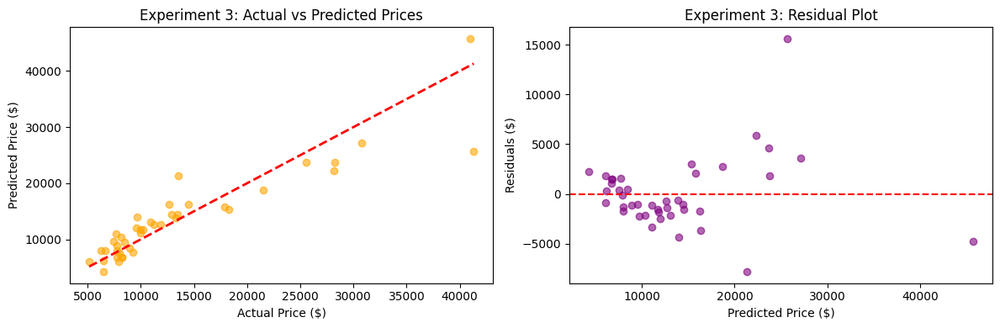

Project 3: Car Price Prediction
Problem Statement and the Dataset
This project tackles a regression problem: predicting car prices based on various vehicle characteristics. Predicting car prices is a fundamental problem in the automotive industry, used by dealers, buyers, and sellers to determine fair market value. Accurate price predictions help:
- Dealerships set competitive prices
- Buyers make informed purchasing decisions
- Sellers understand their vehicle's worth
Dataset Overview
We use the Kaggle CarPrice_Assignment dataset with 205 car records and 26 features. Key features include:
- Engine Size: Engine displacement in liters
- Horsepower: Engine power output
- Curb Weight: Vehicle weight without passengers
- Fuel Type: Type of fuel (Gas, Diesel)
- Aspiration: Standard or Turbo
- Door Number: Number of doors
- Price: Target variable (what we're predicting)
The dataset contains real car data with prices ranging from approximately $5,000 to $45,000
What is Regression and How Does it Work?
Linear Regression
Linear Regression is the simplest and most interpretable regression model. It assumes a linear relationship between features and the target.
Mathematical Formulation
y= B0 +B1x1 + B2x2 + Bnxn
where y is the target variable (price), B0 is the intercept(bias term)Bi is the vector of coefficients, and n is the number of features
Experiment 1
Data Understandning and Initial Exploration
Before building any model, it's crucial to understand the data. I'm exploring:
- Feature distributions: Are features normally distributed or skewed?
- Correlations: Which features are most correlated with price?
- Missing values: Are there any data quality issues?
- Outliers: Are there unusual data points?
Calculating feature Correlation with price we find that:

Key findings from data understanding
There was a very strong correlation between the price and engine size, weight, horsepower, fuel type, aspiration, and door number. Using this knowledge we can use feature selection to focus on these highly correlated features.
Preprocessing
Preprocessing steps:
- Null Values: This dataset does not have any null values
- Encoding categorical variables: Convert 'fueltype' and 'aspiration' to numerical values using one-hot encoding
- Feature scaling: Standardize numerical features to have mean=0 and std=1
- Train-test split: Use 80-20 split for training and testing
Features this Experiment will focus on
- Engine size: The closest correlation with price at 87%
- Curbweight: Second closes correlation at 83%
- fueltype: Different fuel types affect car pricing significantly. Diesel engines typically have different performance characteristics and costs.
- aspiration: Turbo engines are performance features that typically increase car value
- doornumber: Two-door cars (coupes/sports cars) often have different pricing structures than four-door sedans
Linear Regression Model
- Simple and interpretable
- Good baseline for regression problems
- Fast to train
Model Coefficients:
- enginesize: 2690.07
- horsepower: 2949.50
- curbweight: 1970.46
- fueltype_gas: -746.83
- aspiration_turbo: -557.04
- doornumber_two: -153.91
- Intercept: 13223.41
Evaluation of Experiment 1
Experiment 1: linear Regression(All Features)
- Training RMSE: $3303.10
- Test RMSE: $3662.52
- Training R²: 0.8171
- Test R²: 0.8301
- Training MAE: $2336.07
- Test MAE: $2655.67
Experiment 2
Feature Selection and Ridge Regression
Thought Process
In Experiment 1, we used all features. However, not all features may be equally important. I'm testing:
- Feature selection: Use only the most correlated features with price
- Ridge Regression: Add L2 regularization to prevent overfitting
Why Ridge Regression?
- Reduces model complexity by penalizing large coefficients
- Often improves generalization to test data
Top 4 features by correlation to price
- Engine Size: 0.874145
- curbweight: 0.835305
- horsepower: 0.808139
- aspiration_turbo: 0.177926
Experiment 2 Evaluation
- Training RMSE: $3359.11
- Test RMSE: $3800.41
- Training R²: 0.8108
- Test R²: 0.8170
Decrease in performance from Experiment 1
- RMSE increased by $137.89.
- R^2 increased .8170
Taking away some of the features, even thoug they had a lower correlation starved the model of information.
Experiment 3
Linear Regression with Engineered Features
After seeing how experiment 1 performed better than experiment 2, I wanted to go back to the linear regression model
In this experiment, I'm testing:
- Feature Engineering: Create new features that might better capture relationships
- Power-to-weight ratio: Engine power relative to weight
- Engine efficiency: Engine size relative to horsepower
- Weight-to-doors ratio: Weight efficiency per door
- Engine size squared: Captures the non linear relationship between engine size and price
Evaluation
- Training RMSE: $3556.59
- Test RMSE: $3578.50
- Training R²: 0.7879
- Test R²: 0.8378
- Training MAE: $2506.16
- Test MAE: $2461.95
Experiment 3 outperformed Experiment 1 on both key metrics:
- Lower Test RMSE: 3578.50 versus 3662.52 (about $84 improvement)
- Higher Test R²: 0.8378 vs 0.8301 (better fit)
Using the engineered features, the model was able to successfully capture the relationship between the orignial features independently and created a better relationship to price.
Impact
Positive Impacts
- Fair Pricing: Accurate price predictions help ensure fair market value for both buyers and sellers
- Economic Efficiency: Reduces information asymmetry in the used car market
- Consumer Protection: Helps buyers avoid overpaying for vehicles
- Business Optimization: Dealerships can optimize inventory and pricing strategies
Negative Impacts
- Bias in Data: If training data reflects historical discrimination (e.g., certain demographics paying more), the model perpetuates this bias
- Market Manipulation: Dealers could use predictions to artificially inflate prices
- Reduced Negotiation: Transparent pricing might reduce negotiation opportunities for skilled negotiators
- Privacy Concerns: Collecting detailed vehicle and owner data raises privacy questions
- Model Limitations: The model doesn't account for subjective factors like brand reputation or emotional value
Mitigation Strategies
- Regularly audit models for bias
- Use diverse training data
- Combine model predictions with human expertise
- Ensure transparency about model limitations
- Protect user privacy through data anonymization
Conclusion
Comparison of All Experiments
| Experiment | Train RMSE | Test RMSE | Train R² | Test R² |
|---|---|---|---|---|
| Exp 1: Linear Reg (All) | 3303.1 | 3662.519 | 0.817 | 0.830 |
| Exp 2: Ridge (Top 4) | 3359.111 | 3800.411 | 0.810 | 0.817 |
| Exp 3: Linear Reg (Engineered) | 3556.593 | 3578.495 | 0.787 | 0.837 |
Best performing model: Exp 3 with Test RMSE: $3578.50
Summary of Experimental Results
Experiment 1: Linear Regression(All Features)
- Test RMSE: $3,662.52 | Test R²: 0.8301
- Key Finding: Achieved reasonable performance (83% variance explained) but showed signs of overfitting with test RMSE higher than training RMSE
Experiment 2: Ridge Regression(Top 4 Features)
- Test RMSE: $3,800.41 | Test R²: 0.8170
- Key Finding: Performed worse than Experiment 1 - RMSE increased by $137.89. Feature selection alone did not improve performance; the model lost important information by using only 4 features
Experiment 3: Linear Regression(Engineered Features)
- Test RMSE: $3,578.50 | Test R²: 0.8378
- Key Finding: Best performing model - Improved Test RMSE by $84.02 compared to Experiment 1 and achieved the highest Test R² of 0.8378. The engineered features successfully captured important non-linear relationships
Key Learnings
- Feature Engineering Outperforms Simple Feature Selection: Experiment 3 demonstrated that creating meaningful interactions and transformations (like Power-to-Weight ratio) significantly improves model performance compared to simply selecting top correlated features.
- More Features Aren't Always Better, But the Right Features Are: Experiment 2 showed that reducing to only 4 features actually hurt performance. However, Experiment 3 proved that thoughtfully engineered features can outperform using all raw features.
- Good Generalization is Achievable: Experiment 3's training R² (0.7879) being lower than test R² (0.8378) suggests excellent generalization - the model performs better on unseen data, which is the ultimate goal.
- Data Understanding Guides Feature Engineering: The initial correlation analysis in Experiment 1 was critical for identifying which features to combine and transform in Experiment 3.
- Model Complexity vs. Performance Trade-offs:
- Experiment 1 (all features): Simple but adequate baseline
- Experiment 2 (feature selection): Oversimplified and lost performance
- Experiment 3 (engineered features): Optimal balance of complexity and accuracy
Future Work
- Explore additional models- possibly lasso model or utilizing L2
- Implement cross-validation for more robust performance estimates
- Collect more data to improve model robustness and enable more complex feature engineering
- Consider domain-specific features (e.g., brand reputation, market segment)
References
- Scikit-learn Documentation: https://scikit-learn.org/stable/
- Regression Metrics: https://scikit-learn.org/stable/modules/model_evaluation.html#regression-metrics
- Feature Engineering Best Practices: https://machinelearningmastery.com/discover-feature-engineering-how-to-engineer-features-and-how-to-get-good-at-it/
- Dataset Source: https://www.kaggle.com/datasets/hellbuoy/car-price-prediction
- Utilized Claude 4.5 for programming tasks